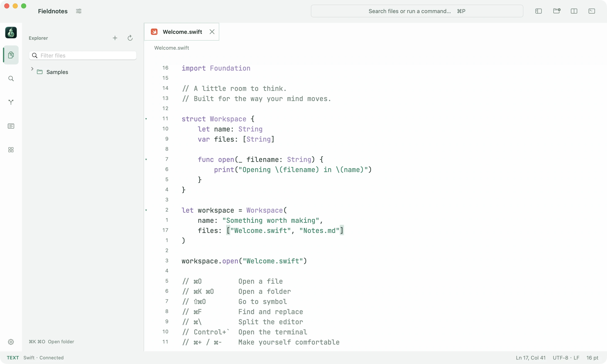

Native where it matters
AppKit windows, native text editing and familiar Mac controls. No Chromium shell.
Native Swift. Your code, tools and ideas in one workspace.
Latest release / macOS 15.6+

AppKit windows, native text editing and familiar Mac controls. No Chromium shell.
Quick file navigation, a command palette, multiple cursors and optional Vim modes.
Split editors, a PTY terminal, Git and live previews beside your code.
From a filename to a symbol, without losing your place.
Multiple cursors, column selection, project search and in file replacement.
Symbols, definitions, references, diagnostics and rename through your language server.
Light and dark themes, fonts, folding and Normal, Insert and Visual modes.
Fewer detours between editing, running and reviewing.
Review diffs, stage changes, commit, browse history and manage submodules.
A native terminal, local or remote commands, and Markdown or HTML previews.
Browse, edit and save remote files using system SSH configuration. Python 3 required remotely.

Leave room for the idea.
Keep the tools within reach.
Build with the Swift SDK and independent plugin processes.
Explore the plugin SDKMenus, shortcuts, tree views, settings and tool windows.
LSP providers, terminal tasks, DAP launch and SSH plugin hosts.
Themes, icons and snippets, including resource only packages.
Load plugins explicitly. Code runs with your user permissions; VSIX and Vim plugins are not compatible.
macOS 15.6 or later, on Apple Silicon and Intel. Releases are Developer ID signed and Apple notarized.
Select a local or remote language server and toolchain in Project Settings. Available features depend on that server.
Linvell implements native Vim editing modes and a subset of motions and commands. Full Vim compatibility remains in progress.
Local recovery snapshots preserve modified buffers. Optional auto save checks for external file conflicts.
An optional preference allowlist, including theme and editor settings. Documents, project paths and credentials stay out.
Releases come from GitHub. Automatic downloads and installation are optional; the updater checks checksums and signing identity.